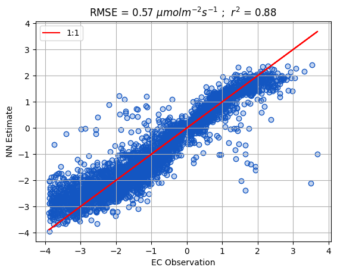
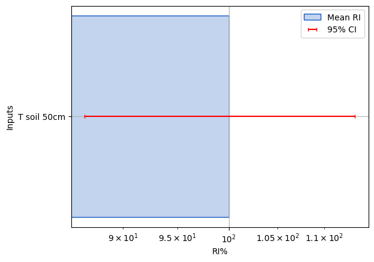

## Import some standard packages and define a few functions
import os
# Hide default info, logs, and warnings - comment out if you need to troubleshoot
os.environ['TF_CPP_MIN_LOG_LEVEL'] = '3'
import time
import shutil
import importlib
import numpy as np
import pandas as pd
# from matplotlib import cm
from sklearn import metrics
import matplotlib.pyplot as plt
from Scripts import PlotHelpers
# from matplotlib.colors import Normalize
from Scripts import ReadDB, MiscFuncs, NNetFuncs
dbNames = {
'Clean/SecondStage/TA_1_1_1':'T air',
'Clean/SecondStage/RH_1_1_1':'RH',
'Clean/SecondStage/FC':'FCO2',
'Clean/SecondStage/FCH4':'FCH4',
'Clean/SecondStage/PPFD_IN_1_1_1':'PPFD',
'Clean/SecondStage/P_1_1_1':'Precip',
'Flux/qc_co2_flux':'qc_FCO2',
'Flux/qc_ch4_flux':'qc_FCH4',
'Clean/SecondStage/USTAR':'u*',
'Clean/SecondStage/TS_1':'T soil 5cm',
'Clean/SecondStage/TS_2':'T soil 10cm',
'Clean/SecondStage/TS_3':'T soil 30cm',
'Clean/SecondStage/wind_speed':'Wind speed',
'Clean/SecondStage/wind_dir':'Wind dir',
'Clean/SecondStage/WTD_1_1_1':'Water table',
}
Local = '/mnt/c/Users/User/PostDoc_Work/database/'
Remote = '/mnt/w/'
Dir = Local
Site = 'BB'
read_new = True
if read_new == True:
Data = ReadDB.get_Traces(Site,list(dbNames.keys()),Dir=Dir)
Data = Data.rename(columns=dbNames)
Data.to_csv(f'temp/{Site}_Data.csv')
else:
Data = pd.read_csv(f'temp/{Site}_Data.csv',parse_dates=['TimeStamp'],index_col='TimeStamp')
Neural Networks for Eddy Covarinace
Pre-processing
importlib.reload(ReadDB)
Data['VPD'] = MiscFuncs.Calc_VPD(Data['T air'],Data['RH'])
# Data['DOY'] = Data.index.dayofyear
target = ['FCO2','FCH4']
Data['Rand']=np.random.random(Data['FCO2'].values.shape)
print(Data[['FCO2','FCH4']].describe())
filter = ReadDB.filterFlux(Data,target)
filter.QA_QC()
filter.dir_mask('Wind dir',[[0,30],[330,360]])
filter.rain('Precip',thresh=1)
filter.MAD(z=7)
filter.uStar('u*',u_thresh=0.1)
Data[['FCO2_Clean','FCH4_Clean']] = filter.df[['FCO2','FCH4']].copy()
print(Data[['FCO2_Clean','FCH4_Clean']].describe())
excludes = ['fco2','fch4']
Full_inputs = []
for val in list(Data.columns):
exct = 0
for ex in excludes:
if ex in val.lower():
exct += 1
if exct < 1:
Full_inputs.append(val)
Full_inputs FCO2 FCH4
count 33385.000000 32951.000000
mean -0.457040 49.597336
std 3.770148 66.645355
min -45.689865 -198.555832
25% -1.767280 8.693725
50% -0.121570 29.436230
75% 0.718945 87.813492
max 49.698837 695.056885
FCO2_Clean FCH4_Clean
count 14123.000000 10777.000000
mean -0.828791 20.652699
std 1.605370 17.728533
min -3.887600 -63.525269
25% -2.137111 7.688650
50% -0.834086 16.143156
75% 0.417498 31.751116
max 4.002227 64.322365['T air',
'RH',
'PPFD',
'Precip',
'u*',
'T soil 5cm',
'T soil 10cm',
'T soil 30cm',
'Wind speed',
'Wind dir',
'Water table',
'VPD',
'Rand']Make Scenarios
def Configure_Run(run,name,df,Base='',layers=1,m=10):
run['config']['Name']=name
run['config']['Base']=Base
# Nodes / layer = the number of inputs times a multiplier, defaults to m=5
Nodes = [m*len(run['config']['inputs']) for l in range(layers)]
run['config']['Nodes']=Nodes
run['config']['Activation']=['relu' for l in Nodes]
run['config']['epochs']=250
# Set to 0 for no pruning - Higher values = more strict pruning
run['config']['Prune_scale']=2
run['config']['Norm']=True
run['config']['RF_comp']=False
run['config']['validation_split']=.25
run['config']['patience']=2
run['config']['N_models']=2
run['Training'] = {}
run['Evaluation'] = {}
target = Model_Runs[key]['config']['target']
inputs = Model_Runs[key]['config']['inputs']
Model_Runs[key]['config']['mean'] = df[inputs].mean().values
Model_Runs[key]['config']['variance'] = df[inputs].std().values**2
df = df.loc[df[target+inputs].dropna().index].copy()
if 'Mask' in Model_Runs[key]['config']:
Training,Validation = MiscFuncs.makeSplit(df,Mask=Model_Runs[key]['config']['Mask'],return_Full=True)
else:
Training,Validation = MiscFuncs.makeSplit(df,dropOut=Model_Runs[key]['config']['validation_split'])
print(Training[target+inputs].shape,Validation[target+inputs].shape)
Model_Runs[key]['Training']['X'] = Training[inputs].values
Model_Runs[key]['Training']['Y'] = Training[target].values.flatten()
Model_Runs[key]['Evaluation']['X'] = Validation[inputs].values
Model_Runs[key]['Evaluation']['Y'] = Validation[target].values.flatten()
# Larger batch > runs faster > but won't fit as well
batch = np.ceil(Model_Runs[key]['Training']['Y'].shape[0]*.01)
if batch<32:
batch=32
run['config']['batch_size']=int(batch)
return(run)
Model_Runs = {
'Full_Model':{
'config':{
'target':['FCO2_Clean'],
'inputs':Full_inputs,
},
},
}
for key in Model_Runs.keys():
print(key)
Model_Runs[key] = Configure_Run(Model_Runs[key],key,Data.copy(),Base='Test')
Model_Runs[key]['config']Full_Model
(10570, 14) (3523, 14){'target': ['FCO2_Clean'],
'inputs': ['T air',
'RH',
'PPFD',
'Precip',
'u*',
'T soil 5cm',
'T soil 10cm',
'T soil 30cm',
'Wind speed',
'Wind dir',
'Water table',
'VPD',
'Rand'],
'Name': 'Full_Model',
'Base': 'Test',
'Nodes': [130],
'Activation': ['relu'],
'epochs': 250,
'Prune_scale': 2,
'Norm': True,
'RF_comp': False,
'validation_split': 0.25,
'patience': 2,
'N_models': 2,
'mean': array([1.05914688e+01, 8.45259781e+01, 2.17713760e+02, 6.54291734e-02,
1.64241463e-01, 1.15897694e+01, 1.14355001e+01, 1.12391300e+01,
1.51118171e+00, 1.68358032e+02, 6.34482155e+01, 2.74992728e+00,
5.00380596e-01]),
'variance': array([4.82479309e+01, 2.44342428e+02, 1.29616722e+05, 6.87984209e-02,
1.34844746e-02, 2.71218554e+01, 2.53605397e+01, 1.30344353e+01,
1.33950994e+00, 6.91920945e+03, 1.05928283e+02, 1.52296638e+01,
8.36187960e-02]),
'batch_size': 106}Build and train model
importlib.reload(NNetFuncs)
Run = 'Full_Model'
def Build_Train_Eval(Run,print_sum=False):
config = Run['config']
Training = Run['Training']
NNetFuncs.make_Dense_model(config,print_sum=print_sum)
NNetFuncs.train_model(config,Training)
Eval = Run['Evaluation']
_=NNetFuncs.run_Model(config,Eval)
Build_Train_Eval(Model_Runs[Run],print_sum=True)Model: "Full_Model"
_________________________________________________________________
Layer (type) Output Shape Param #
=================================================================
input_1 (InputLayer) [(None, 13)] 0
normalization (Normalizatio (None, 13) 0
n)
dense (Dense) (None, 130) 1820
dense_1 (Dense) (None, 1) 131
=================================================================
Total params: 1,951
Trainable params: 1,951
Non-trainable params: 0
_________________________________________________________________
None
Training Time:
8.1 Seconds
NN Model
Validation metrics (ensemble mean):
r2 = 0.8943
RMSE = 0.51684
Run Time:
0.4 Seconds
2 models
Mean epochs/model: 20.5Evaluate and prune the model
importlib.reload(NNetFuncs)
key='Full_Model'
Base = Model_Runs[key]['config']['Base']
Drop_Thresh_Scale = Model_Runs[key]['config']['Base']
Continue_Prune = Model_Runs[key]['config']['Prune_scale']
T1 = time.time()
while Continue_Prune > 0:
RI = NNetFuncs.Prune(Base,key,Verbose=True,Prune_Scale=Continue_Prune)
Pruned_Inputs = list(RI.loc[RI['Drop']==0].index)
if len(Pruned_Inputs)<len(Model_Runs[key]['config']['inputs'])-1:
key = 'Pruned_Model'
Model_Runs[key]={
'config':{
'target':['FCO2_Clean'],
'inputs':Pruned_Inputs+['Rand']
},
}
print('Pruned inputs: ',Model_Runs[key]['config']['inputs'][:-1],'\n\n')
Model_Runs[key] = Configure_Run(Model_Runs[key],key,Data.copy(),Base)
Build_Train_Eval(Model_Runs[key])
else:
Continue_Prune = 0
key = 'Final_Model'
Model_Runs[key]={
'config':{
'target':['FCO2_Clean'],
'inputs':Pruned_Inputs
},
}
print('Final inputs: ',Model_Runs[key]['config']['inputs'][:-1],'\n\n')
Model_Runs[key] = Configure_Run(Model_Runs[key],key,Data.copy(),Base)
Build_Train_Eval(Model_Runs[key],print_sum=True)
shutil.rmtree(f'Models/{Base}/Pruned_Model')
T2 = time.time()
print("Pruning Time: ", T2-T1) RI_bar RI_CI95 lower_bound upper_bound Drop
Rand 0.05 0.01 0.04 0.05 1.34
Wind dir 0.31 0.19 0.12 0.49 1.34
RH 0.38 0.27 0.10 0.65 1.34
Precip 0.52 0.33 0.19 0.85 1.34
Wind speed 0.60 0.18 0.41 0.78 1.34
u* 0.78 0.42 0.36 1.19 1.34
VPD 0.96 0.01 0.95 0.98 1.34
T air 1.69 0.31 1.39 2.00 0.00
Water table 1.83 0.21 1.62 2.04 0.00
T soil 5cm 2.15 0.14 2.00 2.29 0.00
T soil 30cm 4.01 0.65 3.36 4.66 0.00
T soil 10cm 5.10 2.71 2.39 7.81 0.00
PPFD 81.64 6.82 74.81 88.46 0.00
Pruned inputs: ['T air', 'Water table', 'T soil 5cm', 'T soil 30cm', 'T soil 10cm', 'PPFD']
(10570, 8) (3523, 8)
Training Time:
9.96 Seconds
NN Model
Validation metrics (ensemble mean):
r2 = 0.87948
RMSE = 0.55363
Run Time:
0.25 Seconds
2 models
Mean epochs/model: 23.5
RI_bar RI_CI95 lower_bound upper_bound Drop
Rand 0.06 0.01 0.05 0.07 0.95
Water table 1.71 0.12 1.60 1.83 0.00
T soil 5cm 3.19 0.76 2.43 3.95 0.00
T air 4.12 0.44 3.68 4.56 0.00
T soil 30cm 4.39 0.42 3.97 4.81 0.00
T soil 10cm 6.53 0.03 6.50 6.56 0.00
PPFD 80.00 2.18 77.83 82.18 0.00
Final inputs: ['Water table', 'T soil 5cm', 'T air', 'T soil 30cm', 'T soil 10cm']
(10570, 7) (3523, 7)
Model: "Final_Model"
_________________________________________________________________
Layer (type) Output Shape Param #
=================================================================
input_1 (InputLayer) [(None, 6)] 0
normalization (Normalizatio (None, 6) 0
n)
dense (Dense) (None, 60) 420
dense_1 (Dense) (None, 1) 61
=================================================================
Total params: 481
Trainable params: 481
Non-trainable params: 0
_________________________________________________________________
None
Training Time:
8.96 Seconds
NN Model
Validation metrics (ensemble mean):
r2 = 0.87659
RMSE = 0.57006
Run Time:
0.27 Seconds
2 models
Mean epochs/model: 23.0
Pruning Time: 19.60026526451111importlib.reload(NNetFuncs)
config = Model_Runs['Final_Model']['config']
Eval = Model_Runs['Final_Model']['Evaluation']
_=NNetFuncs.run_Model(config,Eval)NN Model
Validation metrics (ensemble mean):
r2 = 0.87659
RMSE = 0.57006
Run Time:
0.25 Seconds
2 models
Mean epochs/model: 23.0Inspect pruned model
importlib.reload(PlotHelpers)
config = Model_Runs[key]['config']
Eval = Model_Runs[key]['Evaluation']
full_out=NNetFuncs.run_Model(config,Eval)
# print('\n\n')
Base = Model_Runs[key]['config']['Base']
Name = Model_Runs[key]['config']['Name']
# run = 'Feature_Detection'
unit = '$\mu mol m^{-2} s^{-1}$'
df = pd.read_csv(f'Models/{Base}/{Name}/model_output.csv',index_col=[0])
fig,ax=plt.subplots()
ax = PlotHelpers.make1_1_Plot(ax,df,'target','y_bar',unit=unit)
ax.set_ylabel('NN Estimate')
ax.set_xlabel('EC Observation')
RI = pd.read_csv(f'Models/{Base}/{Name}/model_RI.csv',index_col=[0])
RI = RI.sort_values(by=f'RI_bar',ascending=True)
fig,ax=plt.subplots()
PlotHelpers.makeRI_plot(ax,RI)
# RI['Thresh'] = RI['RI_bar']-RI['RI_CI95']
print(RI.round(2))NN Model
Validation metrics (ensemble mean):
r2 = 0.87659
RMSE = 0.57006
Run Time:
0.19 Seconds
2 models
Mean epochs/model: 23.0
RI_bar RI_CI95
Water table 1.75 0.23
T air 4.14 0.02
T soil 5cm 4.16 5.18
T soil 30cm 4.45 1.73
T soil 10cm 6.41 1.34
PPFD 79.09 6.14

importlib.reload(PlotHelpers)
Max=4
Top = RI.sort_values(by=f'RI_bar',ascending=False).index[:Max]
cols = 2
npi=len(RI.index)
rows = int(np.ceil(len(Top)/2))
fig,axes=plt.subplots(rows,cols,sharey=True,sharex=True,
figsize=(6,6))
axes = axes.flatten()
mod = '_norm'
for i,xi in enumerate(Top):
print(xi)
# ax.axvspan(0,0,edgecolor='k',linewidth=1.5)
df_int = MiscFuncs.byInterval(df,f'{xi}{mod}',[f'dy_d{xi}{mod}'],bins=50)
PlotHelpers.CI_Plot(axes[i],df_int,f'dy_d{xi}{mod}')
plt.tight_layout()
axes[i].get_ylabel()
for ax in axes:
l = ax.get_ylabel()
ax.set_ylabel(l.split('_norm')[0].replace('_',' / ').replace('y','FCO2'))PPFD
T soil 10cm
T soil 30cm
T soil 5cm
df.columnsIndex(['target', 'y_bar', 'y_CI95', 'Water table', 'dy_dWater table',
'dy_dWater table_CI95', 'T soil 5cm', 'dy_dT soil 5cm',
'dy_dT soil 5cm_CI95', 'T air', 'dy_dT air', 'dy_dT air_CI95',
'T soil 30cm', 'dy_dT soil 30cm', 'dy_dT soil 30cm_CI95', 'T soil 10cm',
'dy_dT soil 10cm', 'dy_dT soil 10cm_CI95', 'PPFD', 'dy_dPPFD',
'dy_dPPFD_CI95', 'dy_dWater table_norm', 'Water table_norm',
'dy_dWater table_norm_CI95', 'dy_dT soil 5cm_norm', 'T soil 5cm_norm',
'dy_dT soil 5cm_norm_CI95', 'dy_dT air_norm', 'T air_norm',
'dy_dT air_norm_CI95', 'dy_dT soil 30cm_norm', 'T soil 30cm_norm',
'dy_dT soil 30cm_norm_CI95', 'dy_dT soil 10cm_norm', 'T soil 10cm_norm',
'dy_dT soil 10cm_norm_CI95', 'dy_dPPFD_norm', 'PPFD_norm',
'dy_dPPFD_norm_CI95', 'bins', 'PPFD_norm_grp', 'T soil 10cm_norm_grp',
'T soil 30cm_norm_grp', 'T soil 5cm_norm_grp', 'PPFD_grp',
'T soil 10cm_grp', 'T soil 30cm_grp', 'T soil 5cm_grp'],
dtype='object')
# df = pd.read_csv(f'Models/{run}/random_forest_output.csv',index_col=[0])
# unit = ''
# fig,ax=plt.subplots()
# ax.scatter(df['target'],df['y_bar'])
# ax.plot(df['target'],df['target'],color='k')
# r2 = np.round(metrics.r2_score(df['target'],df['y_bar']),2)
# RMSE = np.round(metrics.mean_squared_error(df['target'],df['y_bar'])**.5,2)
# ax = PlotHelpers.make1_1_Plot(ax,df,'target','y_bar',unit=unit)
# ax.set_ylabel('NN Estimate')
# ax.set_xlabel('EC Observation')
# RF_RI = pd.read_csv(f'Models/{run}/random_forest_RI.csv',index_col=[0])
# mod = ''
# RF_RI = RF_RI.sort_values(by = f'RI{mod}_bar')
# fig,ax=plt.subplots()
# ax.barh(RF_RI.index,RF_RI[f'RI{mod}_bar'],xerr=RF_RI[f'RI{mod}_CI95'])
# ax.grid()
# ax.set_xscale('log')
# RF_RI# NN_RI = pd.read_csv(f'{run}/model_RI.csv',index_col=[0])
# mod = '_norm'
# NN_RI = NN_RI.sort_values(by=f'RI{mod}_bar',ascending=True)
# fig,ax=plt.subplots()
# ax.barh(NN_RI.index,NN_RI[f'RI{mod}_bar'],yerr=NN_RI[f'RI{mod}_CI95'])
# ax.grid()# RF_Output = pd.read_csv(f'{run}/random_forest_output.csv',index_col=[0])
# RF_Output.head()